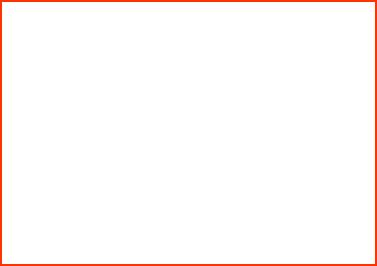

このページは故下山孝さんの「北摂の生き物」をご遺族の了解のもと
池田・人と自然の会
が転載しています。一部データが欠けている部分があります。
「ナナホシテントウ」って、知(し)っていますか…?
では、紙(かみ)を用意(ようい)してを絵(え)でかいてみてください。
もちろん、頭(あたま)・胸(むね)・腹(はら)だけでなく、触角(しょっかく)や足(あし)、七つの点々(てんてん)もかいてね。

かけましたか。
では、
「正解(せいかい)は…?」